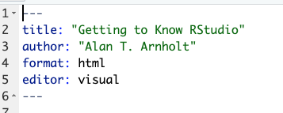
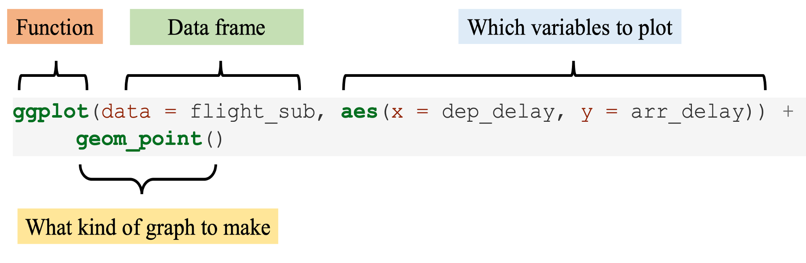
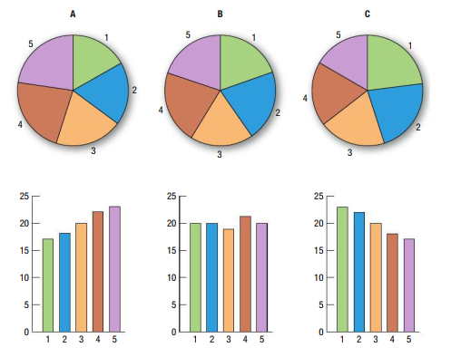

x <- c(1, 2, 3) # creates a vector named x
y <- c(1, 2, 4)
x == y[1] TRUE TRUE FALSER executes statements/commands sequentially. If you want to control the flow of statement execution, you need to use control structures.
The basic component of most control structures is the conditional statement.
A conditional statement is an R statement that is evaluated as either TRUE or FALSE. They use relational operators such as
== for testing equality of R objects,
!= for testing if two R objects are not equal, <,> ,<= and >=.
As an example, look at the following R commands:
x <- c(1, 2, 3) # creates a vector named x
y <- c(1, 2, 4)
x == y[1] TRUE TRUE FALSEx and y that are not equal are the 3rd elements.Similarly,
x != y[1] FALSE FALSE TRUEConditional statements can be combined using logical operators &, | and !.
& means AND.| means OR! means NOT.As an example of the use of &, the following will yield TRUE since both conditions are TRUE.
(x[1] == y[1]) & (x[2] == y[2])[1] TRUEOn the other hand,
(x[1] == y[1]) & (x[3] == y[3])[1] FALSEHowever, the following will yield TRUE since at least one condition is TRUE. That is, the | operator will yield TRUE if at least one of the conditions is TRUE.
(x[1] == y[1]) | (x[3] == y[3])[1] TRUETo negate the truth value of the above statement, use !:
!((x[1] == y[1]) | (x[3] == y[3]))[1] FALSENote the use of parentheses.
To see the effect of parentheses, let’s remove the parentheses in the previous statement.
!(x[3] == y[3]) | (x[1]==y[1])[1] TRUEA control structure that uses conditional statement(s) is the if statement and its variant if else and if else if.
Lets see an example.
The following will display the value of the sum of the first two elements of the vector x since the conditional statement is TRUE.
if (x[1] == y[1]){
sumx <- x[1] + x[2]
sumx
}[1] 3Similarly, the following code will not display anything since the conditional statement is FALSE and hence R will not execute the R statements within the square brackets.
if (x[1] != y[1]){
sumy <- y[1] + y[2]
sumy
}Note that the syntax of an if statement is as follows
if (conditional statement) {R statements}
If you want R to perform either a series of R statements
if (condition) {R statements A }else{ R statements B}
As an example, the following will display the sum of the elements of x since the conditional statement is TRUE:
if (x[1] == y[1]){
sumx <- sum(x)
sumx
} else {
sumy <- sum(y)
sumy
}[1] 6On the other hand, the following will display the sum of the elements of y since the conditional statement is FALSE:
if (x[1] != y[1]){
sumx <- sum(x)
sumx
} else {
sumy <- sum(y)
sumy
}[1] 7The other variant of the if statement is the if else if structure which has the following syntax:
if (condition 1) {R statements A } else if (condition 2) {R statement B } else if (condition 3) {R statement C } else { R statement D}
You can have more than 3 conditions to test so the structure could be longer.
As an example, the following code will display the sum of the elements of y since the 1st condition is FALSE and 2nd condition is TRUE. It will not evaluate the 3rd condition.
if (x[1] != y[1]){
sumx <- sum(x)
sumx
} else if (x[2] == y[2]) {
sumy <- sum(y)
sumy
} else if (x[3]!=y[3]) {
prodx <- x[1]*x[2]*x[3]
prodx
} else {
prody <- y[1]*y[2]*y[3]
prody
}[1] 7On the other hand, the following will display the product of the elements of y (the content of the object prody) since the 3 conditions are FALSE:
if (x[1]!=y[1]){
sumx <- sum(x)
sumx
} else if (x[2]!=y[2]) {
sumy <- sum(y)
sumy
} else if (x[3]==y[3]) {
prodx <- x[1]*x[2]*x[3]
prodx
} else {
prody <- y[1]*y[2]*y[3]
prody
}[1] 8The for loop is one of the most useful control structures in R. Its syntax is as follows
The index variable is usually a dummy integer variable (can have any name) but \(i, j, k,\) etc are often used. For example, the following code will display the text “HELLO” five times.
for (i in 1:5){
print("HELLO")
}[1] "HELLO"
[1] "HELLO"
[1] "HELLO"
[1] "HELLO"
[1] "HELLO"Similarly, the following code will do the same thing:
for (j in 6:10){
print("HELLO")
}[1] "HELLO"
[1] "HELLO"
[1] "HELLO"
[1] "HELLO"
[1] "HELLO"The for loop is useful when you want to repeat a command and you know exactly how many times you want the command repeated.
The following code will display the contents of the vector \(z\) in reverse order.
reverse.z <- numeric(10) command, R will display an error message saying object reverse.z not found.reverse.z <- numeric(10)
z <- 1:10
for (k in 1:10){
reverse.z[k]<- z[10 -k + 1]
}
reverse.z [1] 10 9 8 7 6 5 4 3 2 1Quarto provides an easy way to produce rich, fully-documented, reproducible analyses.
It allows users to share a single file containing
Quarto allows you to
I think you’ll be pleasantly surprised at how easy it is to write a Quarto document once you get the hang of it.
To open/create a new (Quarto) file, click on the little green plus on the upper left hand and select Quarto Document; see Figure \(\ref{fig:open_qmd}\).

Let’s make some changes to the R Markdown file you just opened
After editing the file you Knit to your desired output format (HTML, PDF, or Word file).
The top part of the file is called the YAML header.
YAML is a recursive acronym that stands for “YAML Ain’t Markup Language”
It is defined on its official website at http://yaml.org as: a human friendly data serialization standard for all programming languages.
Essentially, the YAML header stores the metadata needed for the document
You can see an example of a YAML header from our first_rmarkdown.Rmd file
knitr::include_graphics("yaml.png")
You can create many different sized headers by simply adding one or more # in front of the text you’d like to denote the header.
We can add italics by surrounding the word by
As we have seen from our first_rmarkdown.Rmd file we can can bold a word by surrounding the word by
Now let us italicize one word in our first_rmarkdown.Rmd.
To add a link to a URL,
Now let us do the following in our first_rmarkdown.Rmd file.
This is the link to R Studio download page. Here is theLink and put it inside [ ][Link] with no space in betweenAs we saw in our first_rmarkdown.Rmd file, you create an unordered list by using - in front of the lists.
But we can also create ordered list by using numbers, letters or roman numerals.
Now let us do the following in our first_rmarkdown.Rmd file.
For Loop Statement header, let us change the sub-list to letters (i, ii).R Markdown header, let us change main lists to numbers (1, 2)If you’d like nice mathematical formulas in your document, you can add them between two dollar signs.
Now let us do the following in our first_rmarkdown.Rmd file.
We’ve seen that we can add R code and have that run in an R chunk of code enclosed by three backticks.
However, what if we wanted to include the results of a simple calculation directly in the text of our document? R Markdown can do that as well:
Now let us do the following in our first_rmarkdown.Rmd file.
You can set many options on a chunk by chunk basis. The most common R chunk options are echo, eval, and include. By default, all three of these options are set to TRUE,
echo dictates whether the code that produces the result should be printed before the corresponding R output.
eval specifies whether the code should be evaluated or just displayed without its output.
include specifies whether the code AND its output should be included in the resulting knitted document. If it is set to FALSE the code is run, but neither the code or its output are included in the resulting document.
Now let us do the following in our first_rmarkdown.Rmd file.
echo=FALSE,Near the top of your R Markdown editor window sits one of the more useful tools for writing documents:
Before you submit a document or share it with someone else, you should spell check your document.
Finally let us spell check our first_rmarkdown.Rmd file
We begin the development of your data science toolbox with data visualization
By visualizing data, we gain valuable insights we couldn’t initially obtain from just looking at the raw data values
At their most basic, graphics/plots/charts (we use these terms interchangeably) provide a nice way to explore the patterns in data, such as
Graphics are designed to emphasize the findings and insights you want your audience to understand.
Let’s load all the packages needed for this chapter. You need to install them if you haven’t already.
library(nycflights13)
library(ggplot2)
library(moderndive)We start with a discussion of a theoretical framework for data visualization known as “the grammar of graphics.”
This framework serves as the foundation for the ggplot2 package which we’ll use extensively in this class.
Think of how we construct and form sentences in English by combining different elements, like nouns, verbs, articles, subjects, objects, etc.
Similarly to a linguistic grammar, “the grammar of graphics” defines a set of rules for constructing statistical graphics by combining different types of layers.
In short, the grammar tells us that
Specifically, we can break a graphic into the following three essential components:
data: the dataset containing the variables of interest.
geom: the geometric object in question. This refers to the type of object we can observe in a plot. For example: points, lines, and bars.
aes: aesthetic attributes of the geometric object. For example, x/y position, color, shape, and size. Aesthetic attributes are mapped to variables in the dataset.
There are other components of the grammar of graphics we can control as well. In this class, we’ll keep things simple and only work with these two additional components:
faceting breaks up a plot into several plots split by the values of another variable
position adjustments for barplots.
We will only focus on five different types of graphics, each with a commonly given name. - We term these “five named graphs” or in abbreviated form, the 5NG:
We’ll also present some variations of these plots
Note that:
The simplest of the 5NG are scatterplots, also called bivariate plots. They allow you to visualize the relationship between two numerical variables.
Let’s view them through the lens of the grammar of graphics we presented earlier.
Specifically, we will visualize the relationship between the following two numerical variables in the alaska_flights data frame included in the moderndive package:
dep_delay: departure delay on the horizontal “x” axis and
arr_delay: arrival delay on the vertical “y” axis
geom_pointggplot(data = alaska_flights, mapping = aes(x = dep_delay, y = arr_delay)) +
geom_point()
We observe that a positive relationship exists between dep_delay and arr_delay: as departure delays increase, arrival delays tend to also increase.
geom_pointggplot() function, we specify two of the components of the grammar of graphics as arguments (i.e., inputs):The data as the alaska_flights data frame via data = alaska_flights.
The aesthetic mapping by setting mapping = aes(x = dep_delay, y = arr_delay).
We then add a layer to the ggplot() function call using the + sign.
geometric object.geom_point().geom_pointknitr::include_graphics("Week2_1.png")
Note that the + sign comes at the end of lines, and not at the beginning. You’ll get an error in R if you put it at the beginning of a line.
From the scatterplot from the alaska_flights, the large mass of points near \((0, 0)\), can cause some confusion since it is hard to tell the true number of points that are plotted.
This is the result of a phenomenon called overplotting.
There are two methods to address the issue of overplotting. Either by
Change the transparency/opacity of the points by setting the alpha argument in geom_point().
We can change the alpha argument to be any value between 0 and 1,
0 sets the points to be 100% transparent and1 sets the points to be 100% opaque.By default, alpha is set to 1. In other words, if we don’t explicitly set an alpha value, R will use alpha = 1.
Note how the following code is identical to the earlier code that created the scatterplot with overplotting, but with alpha = 0.2 added to the geom_point() function.
ggplot(data = alaska_flights, mapping = aes(x = dep_delay, y = arr_delay)) +
geom_point(alpha = 0.2)Now areas with a high-degree of overplotting are darker, whereas areas with a lower degree are less dark.
The second way of addressing overplotting is by jittering all the points.
This means giving each point a small “nudge” in a random direction.
Example: Say we have a data frame with 4 identical rows of x and y values: (0,0), (0,0), (0,0), and (0,0)
knitr::include_graphics("Week2_2.png")
ggplot(data = alaska_flights, mapping = aes(x = dep_delay, y = arr_delay)) +
geom_jitter(width = 30, height = 30)Which method was better?
The next of the five named graphs are linegraphs.
Linegraphs show the relationship between two numerical variables when the variable on the x-axis, also called the explanatory variable, is of a sequential nature. In other words, there is an inherent ordering to the variable.
The most common examples of linegraphs have some notion of time on the x-axis: hours, days, weeks, years, etc.
Lets explore the early_january_weather data frame included in the moderndive package, which contains hourly weather observations.
geom_lineggplot(data = early_january_weather,
mapping = aes(x = time_hour, y = temp)) +
geom_line()We observe an upward trend and seasonality.
Let’s consider the temp variable in the weather data frame from the nycflights13 package.
temp distribute. In other words:One way to do that is by producing a histogram.
We first cut up the x-axis into a series of bins, where each bin represents a range of values.
For each bin, we count the number of observations that fall in the range corresponding to that bin.
Then for each bin, we draw a bar whose height marks the corresponding count.
geom_histogramggplot(data = weather, mapping = aes(x = temp)) +
geom_histogram()
Note that:
bins = 30 (Default value).geom_histogramNow let’s unpack the resulting histogram
Observe that values less than \(25^{\circ}F\) as well as values above \(80^{\circ}F\) are rather rare.
However, because of the large number of bins, it’s hard to get a sense for which range of temperatures is spanned by each bin
color = "white" argument to geom_histogram().geom_histogramggplot(data = weather, mapping = aes(x = temp)) +
geom_histogram(color = "white")We now have an easier time associating ranges of temperatures to each of the bins.
We can also vary the color of the bars by setting the fill argument.
geom_histogramggplot(data = weather, mapping = aes(x = temp)) +
geom_histogram(color = "white", fill = "steelblue")colors() to see all 657 possible choice of colors in R!Method 1: By adjusting the number of bins via the bins argument to geom_histogram().
ggplot(data = weather, mapping = aes(x = temp)) +
geom_histogram(bins = 40, color = "white")Method 2: By adjusting the width of the bins via the binwidth argument to geom_histogram()
ggplot(data = weather, mapping = aes(x = temp)) +
geom_histogram(binwidth = 10, color = "white")Before continuing with the next of the 5NG, let’s briefly introduce a new concept called faceting.
Faceting is used when we’d like to split a particular visualization by the values of another variable.
This will create multiple copies of the same type of plot with matching x and y axes, but whose content will differ.
Example: lets Looking at how the histogram of hourly temperature recordings at the three NYC airports we saw earlier differed in each month.
ggplot(data = weather, mapping = aes(x = temp)) +
geom_histogram(binwidth = 5, color = "white") +
facet_wrap(~ month)We can also specify the number of rows and columns in the grid by using the nrow and ncol arguments inside of facet_wrap().
ggplot(data = weather, mapping = aes(x = temp)) +
geom_histogram(binwidth = 5, color = "white") +
facet_wrap(~ month, nrow = 4)Another type of visualization that can be used to compare the distribution of a numerical variable split by the values of another variable is a side-by-side boxplot.
A boxplot is constructed from the information provided in the five-number summary of a numerical variable.
Let’s see an example of a boxplot using hourly temperature recordings for the month of November.
From the figure below:
knitr::include_graphics("Week2_3.png")
From the Boxplot:
25% of observations were below 36\(^{\circ}\)F.
25% of observations were between 36\(^{\circ}\)F and 45\(^{\circ}\)F and 50% of observations were below 45\(^{\circ}\)F.
25% of observations were between 45\(^{\circ}\)F and 52\(^{\circ}\)F and 75% of observations were below 52\(^{\circ}\)F.
25% of observations were above 52\(^{\circ}\)F.
The middle 50% of points lie within the interquartile range (IQR) between the first and third quartile.
The whiskers stick out from either end of the box all the way to the minimum(21\(^{\circ}\)F) and maximum observed temperatures (71\(^{\circ}\)F).
geom_boxplot: Invalid specificationggplot(data = weather, mapping = aes(x = month, y = temp)) +
geom_boxplot()Observe that this plot does not provide information about temperature separated by month.
month variable is numerical variable.geom_boxplotggplot(data = weather, mapping = aes(x = factor(month), y = temp)) +
geom_boxplot()Thus the 12 separate boxplots are shown “side-by-side.”
Both histograms and boxplots are tools to visualize the distribution of numerical variables.
Another commonly desired task is to visualize the distribution of a categorical variable.
Often the best way to visualize these different counts, also known as frequencies, is with barplots (also called barcharts).
One complication, however, is how your data is represented.
For example, run the following code that manually creates two data frames representing a collection of fruit: 3 apples and 2 oranges.
library(dplyr)
fruits <- tibble(
fruit = c("apple", "apple", "orange", "apple", "orange")
)
fruits_counted <- tibble(
fruit = c("apple", "orange"),
number = c(3, 2)
)fruits # A tibble: 5 × 1
fruit
<chr>
1 apple
2 apple
3 orange
4 apple
5 orangefruits_counted # A tibble: 2 × 2
fruit number
<chr> <dbl>
1 apple 3
2 orange 2Depending on how your categorical data is represented, you’ll need to add a different geometric layer type to your ggplot() to create a barplot.
geom_barggplot(data = fruits, mapping = aes(x = fruit)) +
geom_bar()When the categorical variable whose distribution you want to visualize is not pre-counted in your data frame, we use geom_bar().
geom_colggplot(data = fruits_counted, mapping = aes(x = fruit, y = number)) +
geom_col()When the categorical variable whose distribution you want to visualize is pre-counted in your data frame, we use geom_col().
flights dataLet’s now go back to the flights data frame in the nycflights13 package and visualize the distribution of the categorical variable carrier.
flights have not been pre-counted by carrier, we use geom_bar().flights dataggplot(data = flights, mapping = aes(x = carrier)) +
geom_bar()One of the most common plots used to visualize the distribution of categorical data is the pie chart.
A pie chart presents each category as a slice of a circle so that each slice has a size that is proportional to the whole in each category.
While they may seem harmless enough, pie charts actually present a problem in that humans are unable to judge angles well.
This makes barplots preferred in certain situations.

It is hard to see the pattern in the pie chart but the bar chart makes it easier to compare frequencies in groups.
Barplots are a very common way to visualize the frequency of different categories, or levels, of a single categorical variable.
Another use of barplots is to visualize the joint distribution of two categorical variables at the same time.
Let’s examine the joint distribution of outgoing domestic flights from NYC by carrier as well as origin.
ggplot(data = flights, mapping = aes(x = carrier, fill = origin)) +
geom_bar()fill aesthetic corresponds to the color used to fill the barsggplot(data = flights, mapping = aes(x = carrier, color = origin)) +
geom_bar()color aesthetic corresponds to the color of the outline of the bars.While simple to make, in certain aspects it is not ideal.
For example, it is difficult to compare the heights of the different colors between the bars, corresponding to comparing the number of flights from each origin airport between the carriers.
An alternative to stacked barplots are side-by-side barplots, also known as dodged barplots.
The code to create a side-by-side barplot is identical to the code to create a stacked barplot, but with a position = "dodge" argument added to geom_bar().
ggplot(data = flights, mapping = aes(x = carrier, fill = origin)) +
geom_bar(position = "dodge")position_dodge() function.ggplot(data = flights, mapping = aes(x = carrier, fill = origin)) +
geom_bar(position = position_dodge(preserve = "single"))Change order:
flights1<-flights
flights1$origin1 <- factor(flights1$origin, ordered = TRUE,
levels = c("JFK", "EWR","LGA"))
ggplot(data = flights1, mapping = aes(x = carrier, fill = origin1)) +
geom_bar(position = position_dodge(preserve = "single"))ggplot(data = flights, mapping = aes(x = carrier)) +
geom_bar() +
facet_wrap(~ origin, ncol = 1)